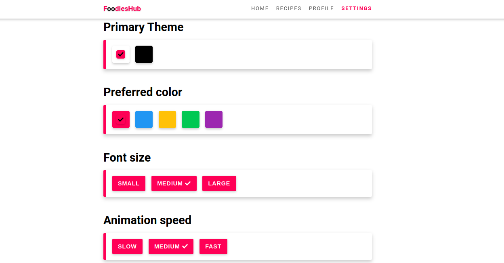
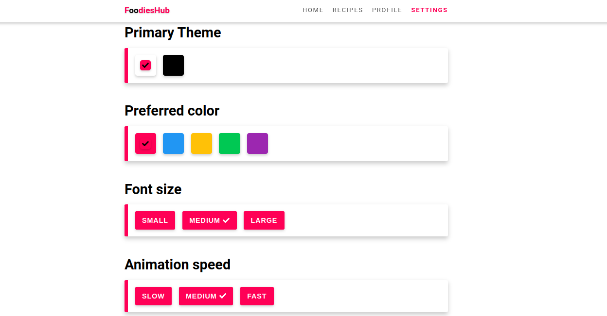

"FoodiesHub"

 

Es una página web de recetas en la cual se puede loguear, entrar a su perfil y cargar, modificar o eliminar tus propias recetas. Cuenta con seccion de recetas con mas de 80 platos gratis. Seccion de settings, donde se puede elegir el tema, color, tamaño de fuente y velocidad de efectos de la pagina.
La aplicación fue desarrollada con ReactJS-Redux por el lado del cliente y NodeJS-Express por el lado del servidor y se empleó una base de datos relacional en sequelize.